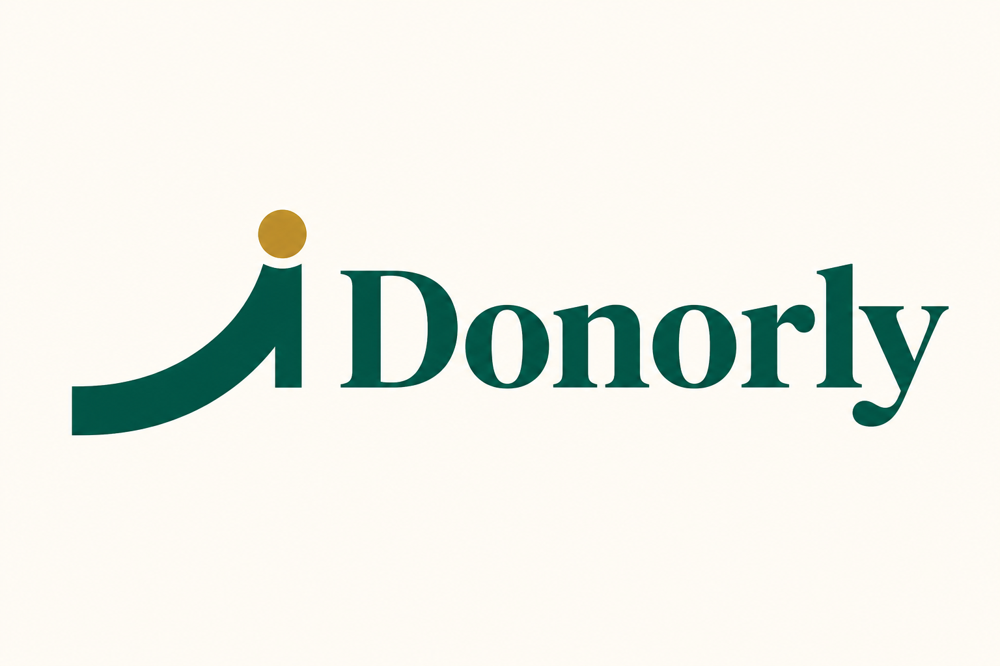
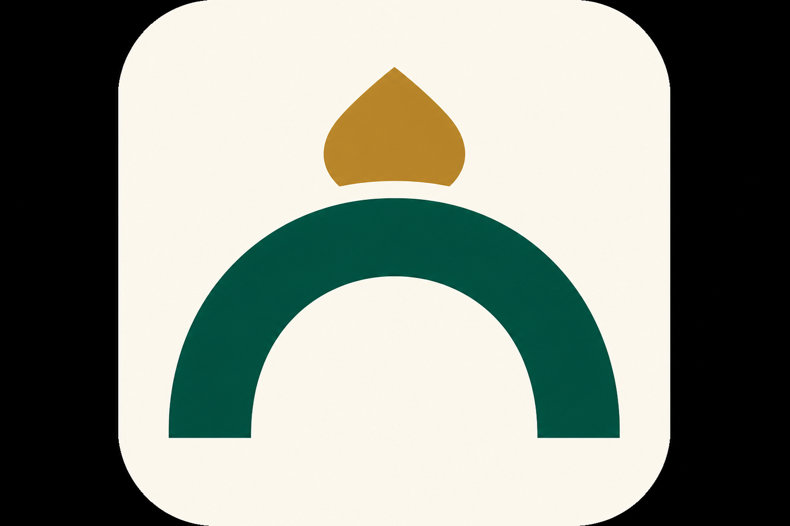

Donorly
Brand guidelines — fundraising software built for community organizations, live events, and dignified donor relationships.
Brand guidelines — fundraising software built for community organizations, live events, and dignified donor relationships.
Donorly helps mosques, masjids, and community nonprofits run fundraising with clarity and trust — from pledge cards and follow-ups to live event tally screens and inventory accountability.
Our brand should feel grounded, dignified, and capable: not flashy fintech, not cold enterprise software. We serve volunteers at a Friday fundraiser, finance teams issuing receipts, and donors scanning a QR from their pew.
| We are | We are not |
|---|---|
| Trustworthy & calm | Hype-driven or aggressive |
| Event-ready & practical | Over-designed or decorative |
| Warm & community-centered | Corporate or impersonal |
| Clear & action-oriented | Jargon-heavy or vague |
Fundraising, organized.
Use on marketing materials, login screens, and store listings — not required in the product UI.
The Donorly mark pairs a giving arc symbol with a bold serif wordmark. The arc suggests growth, community uplift, and live campaign progress; the gold dot marks achievement and “money-in” moments.

Primary — horizontal lockup (PNG)
Primary — vector (SVG)
Reversed — dark backgrounds

App icon / favicon source
Maintain clear space equal to the height of the gold dot around the full lockup. Do not place text, borders, or other marks inside this zone.
Emerald is trust, structure, and navigation. Gold is reserved for collected amounts, goals reached, and positive confirmation — never as a primary UI chrome color. Cream is the warm canvas that keeps the product approachable.
Body text on cream: #1c2b26. White text on org-custom sidebar colors must meet WCAG AA — the product darkens brand colors automatically when contrast is insufficient.
Cormorant Garamond (600–700) — Display & wordmark. Headlines, campaign names, login hero.
Manrope (400–700) — UI & body. Forms, tables, buttons, navigation labels.
Record the pledge · Mark collected · Scan to pledge
| Role | Font | Size |
|---|---|---|
| Page title | Cormorant Garamond Bold | 24–36px |
| Section heading | Cormorant Garamond Bold | 20–24px |
| Body | Manrope Regular | 14–16px |
| Label / table | Manrope Medium | 12–14px |
| Live tally (projector) | Cormorant Garamond Bold | 48–96px |
Each organization may set a primary color and logo. Donorly emerald remains the platform default; org branding applies to sidebar and accents. Never replace the Donorly wordmark with an org name in the platform chrome — show org name beside or below Donorly.
| Surface | Guidance |
|---|---|
| Web portal | Cream background, emerald sidebar, gold for collected stats |
| Live tally / projector | Emerald dark full-bleed, large serif numbers, gold at 100% goal |
| Public self-pledge | Mobile-first, cream + emerald, minimal fields |
| App icon / PWA | Symbol on cream; 512×512 master from donorly-icon.png |
| Email receipts | Org-branded sender when configured; Donorly footer optional |